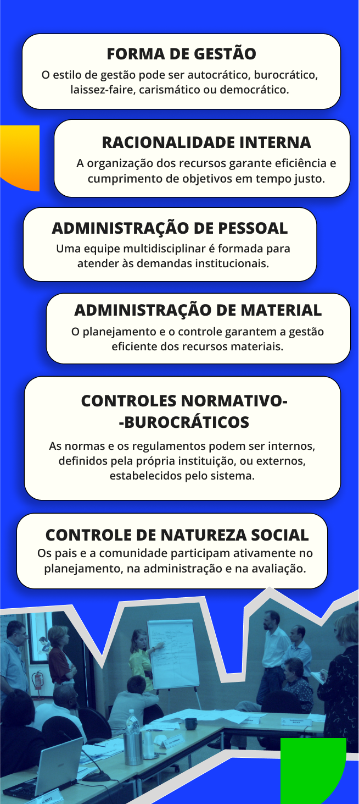
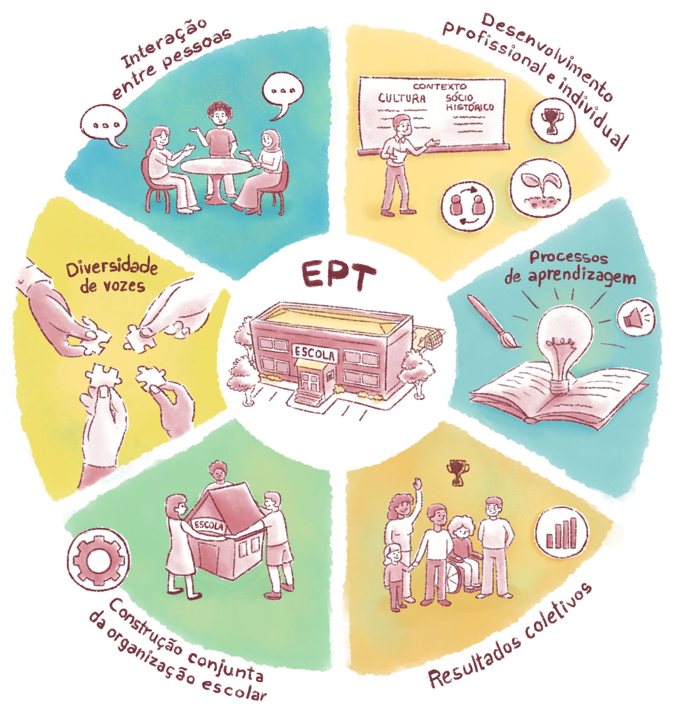
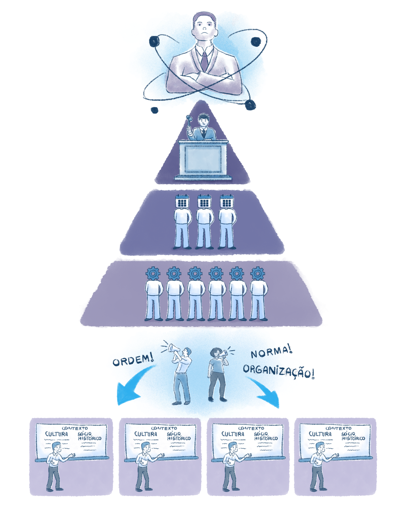

Dimensão Administrativa e de Pessoas
De acordo com Paro (2012), a primeira dimensão – administrativa e de pessoas – diz respeito à utilização racional de recursos para determinados fins. Ainda que a administração seja um produto de longa evolução histórica que tem em si contradições sociais e interesses políticos em jogo, ela é necessária ao ser humano e à comunidade. A atividade administrativa não se ocupa do esforço despendido por pessoas isoladamente, mas com o esforço humano coletivo. Por isso, inclui as relações dos seres humanos entre si.
A autora Carmem Moreira de Castro Neves (1995) propõe, mais especificamente, que o eixo administrativo e de pessoas se refere à organização da instituição na sua totalidade, como, por exemplo, o estilo de gestão, cuja figura do diretor ou coordenador é ser agente promotor de um processo que envolve um padrão de relacionamento não só interno, mas também com a comunidade e com o sistema educacional no qual a instituição está inserida.

Título: Dimensões Administrativas na Gestão
Fonte: Casipphotos (2008), Neves (1995).
Elaboração: Prosa (2025b).
Olhar para a dimensão administrativa e de pessoas como um processo contínuo e coletivo, planejando o trabalho com a participação efetiva dos sujeitos envolvidos, exige buscar continuamente a visão da maioria e não servir a interesses de pequenos grupos. Desse modo, amplia-se sempre que possível a responsabilidade e a autoridade para o coletivo, proporcionando a horizontalidade nas relações e vivenciando uma gestão dinâmica, contínua e global.
A mudança de paradigma na forma de gerir uma instituição educacional trouxe esse importante modo de conceber e viver a gestão ao propor substituir a hierarquização e a burocratização por um processo de coordenação e de horizontalização, marcado por relacionamentos interpessoais e horizontais que promovem a diversidade das partes na formação do todo. A coordenação e a horizontalização valorizam a diversidade de vozes para orientar os rumos da gestão, e as responsabilidades são compartilhadas entre profissionais e setores. Nesse processo, a organização atua a serviço das pessoas e o foco é voltado ao desenvolvimento, à aprendizagem e à construção dentro da organização, cuja unidade de trabalho se concentra no resultado a ser alcançado (Lück, 2014).
De acordo com Lück (2014), a hierarquização e a burocratização são caracterizadas por relacionamentos impessoais e verticais, marcados por subordinações que promovem a uniformidade das partes na formação do todo. Nesse contexto, a univocidade se torna fundamental para direcionar os rumos da gestão. A departamentalização das responsabilidades e a especialização das tarefas são aspectos que tornam as pessoas instrumentos a serviço da organização, enfatizando a importância das formalidades e do cumprimento de normas e regulamentos. Assim, a unidade de trabalho se concentra na função a ser executada, garantindo a eficiência organizacional.


Título: Hierárquico vs. Horizontal
Fonte: Prosa (2025c).
Refletir sobre a dimensão da gestão administrativa e de pessoas é fundamental no contexto não só da EPT, mas na educação que se propõe a ser libertadora como um todo, uma vez que o modo como se encara a gestão influencia muito na cultura, nas relações e no desenvolvimento da missão e dos valores da instituição. Pensando especificamente no que discutimos acima, a coordenação e a horizontalização são estratégias que podem desempenhar um papel fundamental na transformação da instituição escolar, especialmente no contexto da EPT. Ao promover uma gestão mais colaborativa e menos hierarquizada, cria-se um ambiente em que os diferentes membros da comunidade escolar possuem voz ativa e contribuem nas decisões coletivas, espelhando os princípios de autonomia, da responsabilidade social e da colaboração que se deseja cultivar nos estudantes. Assim, a coordenação e a horizontalização não são apenas estratégias administrativas, mas almejam construir uma cultura institucional que priorize o diálogo e a corresponsabilidade, preparando tanto os profissionais quanto os estudantes para uma atuação consciente, ética e transformadora no mundo do trabalho e na sociedade.
Os cursos de Educação Profissional Técnica de Nível Médio Integrada ao Ensino Médio, por exemplo, são excelentes espaços para vivenciar experiências de coordenação e lideranças, envolvendo estudantes na discussão de problemas reais e que, a partir dos eixos tecnológicos, desenvolvem soluções coletivas e em prol da sociedade. As próprias concepções e princípios da política de Ensino Médio Integrado – que consistem na formação humana integral; no trabalho, na ciência, na tecnologia e na cultura como categorias indissociáveis da formação humana; no trabalho como princípio educativo; na pesquisa como princípio educativo, tendo o trabalho como produtor do conhecimento; e na relação parte-totalidade na proposta curricular (Brasil, 2007) – incentivam essas vivências e experiências, favorecendo a construção de uma formação significativa e contextualizada que promove autonomia, pensamento crítico e compromisso social nos estudantes.